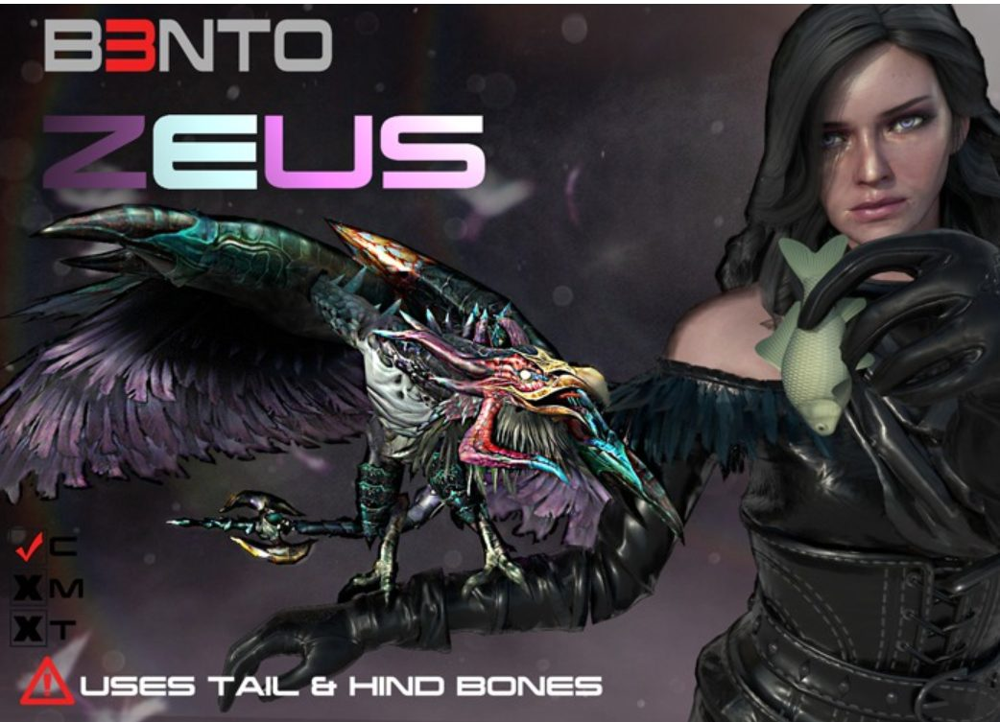
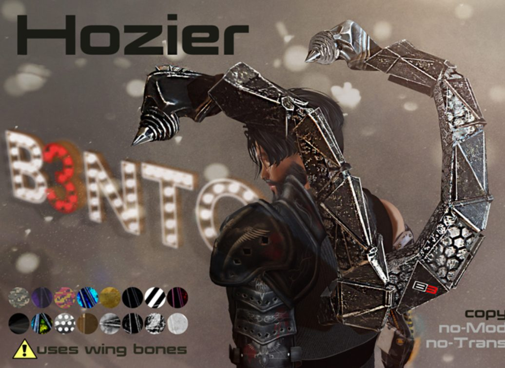
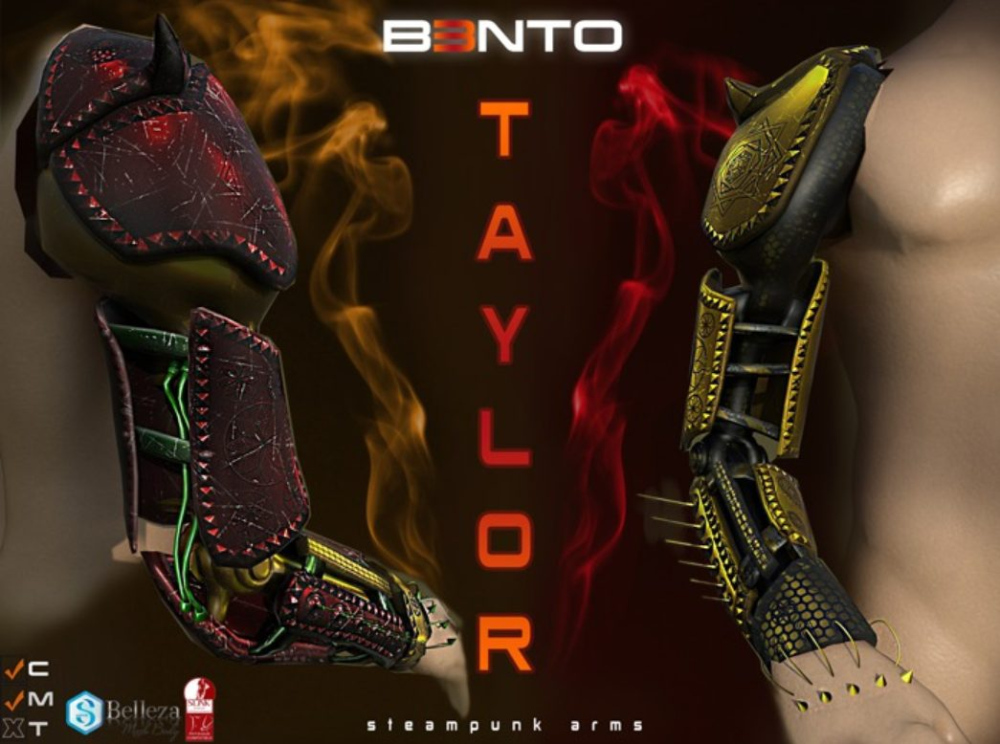
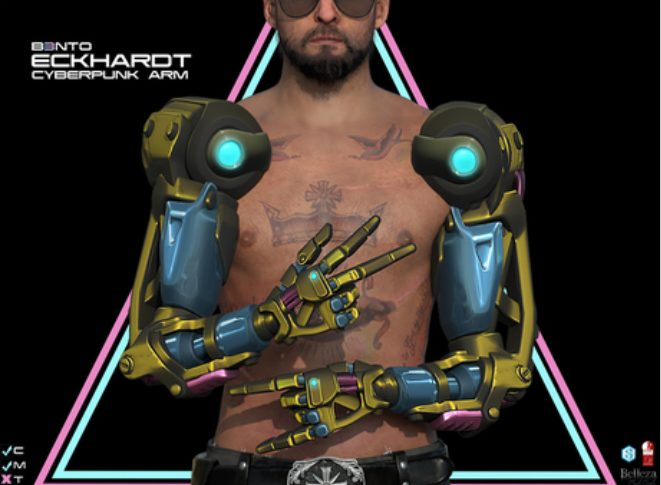
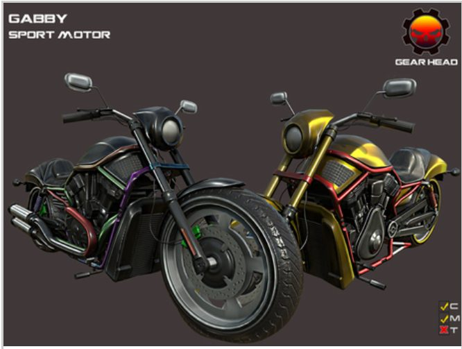
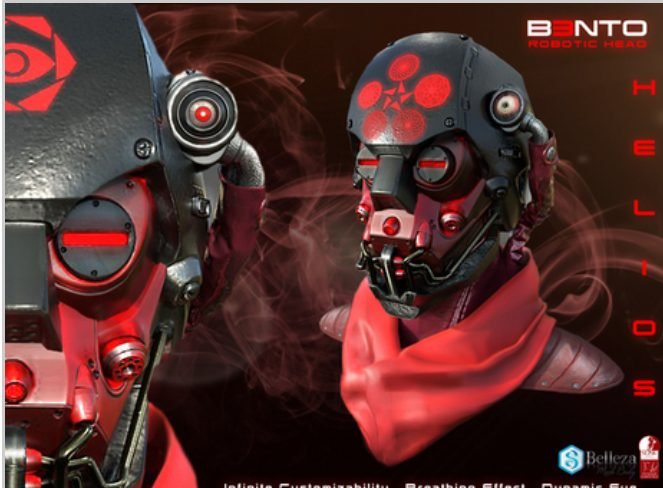

Alireza
Nameni
Engineer by instinct, researcher by training, builder by default.
Bridging research training with production-grade engineering for reliable, tool-connected systems.
Agents that remember, reason, and act.
Large language models connected to tools, memory, retrieval systems, and automated workflows for end-to-end task execution.
Agentic workflows
Letta & LangChain: tool-using agents with persistent memory systems.
RAG & retrieval
Grounding LLMs in real knowledge with retrieval and evaluation loops.
Workflow automation
n8n pipelines that turn agent reasoning into shipped automation.
Deep learning for the language of proteins.
During my PhD in Medical Biotechnology at VIB–UGent, I developed deep-learning methods for computational proteomics, with a focus on predicting peptide behaviour in LC-MS/MS workflows. These models support more accurate peptide identification, especially for modified peptides and experiments where retention-time calibration is essential.
iDeepLC
Analytical Chemistry 2026 · read paper ↗Flagship deep-learning predictor for modified peptides, with a significant reduction in Relative MAE for retention-time prediction across diverse proteomic datasets.
DeepLC Transfer Learning
Nature Communications 2026 · read paper ↗Transfer-learning extension of DeepLC, adapting a pretrained retention-time model to new experimental setups with only minimal calibration data.
Mokapot ML Rescoring
2022 – 2024Implemented and benchmarked mokapot-based ML rescoring to increase peptide-spectrum-match identifications while controlling FDR.
Poster, Audience Award
EuBIC 2024, voted by peers.
3-Minute Thesis finalist
HUPO 2023, 2024 & 2025.
ECR poster
HUPO 2024 & 2025, from 0 submissions.
Research on top of six years in industry.
Gen AI Engineer · Telenet
Incoming: bringing agentic systems and production ML into a telecom at scale.
PhD Researcher · VIB–UGent
Architected iDeepLC; mentored four MSc students on research and engineering workflows.
Visiting Researcher · EMBL · CRG · FH Upper Austria
Built Python QA packages that accelerated review ~10×. Invited speaker at CRG.
Head of Informatics · Petrozist Co.
Led the IT team, resolved network-security issues, and ran corporate infrastructure & web systems.
Informatics Engineer · Tom Electronic
Built a CRM automation tool, maintained IT infrastructure, and supervised CNC / laser production workflow.
iDeepLC
The deep-learning retention-time predictor, open-sourced under compomics.
Snapshot Inventory Agent
Reads a photograph and turns what it sees into structured inventory.
LLM-as-OS
Exploring the LLM as an operating system: agent memory and orchestration.
ReadmeAgent
Reads a codebase and writes the README it deserves.
Cover Letter Agent
Drafts tailored cover letters from a role and a résumé. Small, useful, shipped.
ProteoBench
Contributor to the open, community benchmarking framework for proteomics workflows.
Modeled, textured, rigged & rendered.
Outside research and AI engineering, I build interactive and visual systems, including 3D assets, game prototypes, and rendered technical designs. Cyberpunk wearables, vehicles and creatures: robotic arms, motorcycles, winged rigs and steampunk accessories. Full pipeline of modeling, texturing and animation.

Zeus

Hozier

Taylor

Cyberpunk arm

Sport motorcycle

Robotic head
Building for play, too.
Outside research and AI engineering, I build interactive and visual systems, including 3D assets, game prototypes, and rendered technical designs.
alirezak2n.itch.io →Let’s build something.
Open to collaborations in machine learning, computational proteomics, scientific software, and applied AI systems.
For a full CV, please contact me by email or LinkedIn.